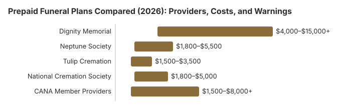

Prepaid Funeral Plans Compared (2026): Providers, Costs, and Warnings
Prepaid funeral plans make a simple pitch: pay current prices, make your wishes known, and spare your family the financial and emotional burden of planning a funeral. But the reality is more nuanced. Prepaid plans vary widely in their price guarantees, cancellation terms, transferability, and consumer protections. Some plans are excellent financial tools, while others have hidden pitfalls that can cost families thousands of dollars. This guide compares the major prepaid funeral plan providers in 2026, explains how these plans work, and provides critical warnings about practices to avoid.
Disclaimer: Information only, not professional advice. Full disclaimer.
How Prepaid Funeral Plans Work
A prepaid funeral plan is an agreement between you and a funeral home or cremation provider to arrange and pay for specific funeral services in advance. Here is how the process typically works:
- Consultation: You meet with a preneed counselor at a funeral home or cremation provider and select the specific services, merchandise, and arrangements you want.
- Pricing: The provider calculates the total cost based on their current prices. Many plans claim to "lock in" today's prices, meaning you will not pay more even if prices increase.
- Funding: You fund the plan either as a lump sum payment or through monthly installments. The funds are typically placed in one of three vehicles:
- Preneed insurance policy: The most common funding method. An insurance company holds the funds and pays the funeral home upon your death.
- Trust account: The funds are placed in a state-regulated trust that earns interest until the services are needed.
- Direct payment to the funeral home: Less common and less protected. The funeral home holds the funds directly.
- Documentation: You receive a written contract detailing every service and product included, the total cost, the payment terms, and the cancellation and transfer provisions.
- At the time of need: Your family contacts the funeral home, which provides the pre-arranged services funded by your plan. Ideally, your family has no out-of-pocket costs for the covered services.
For a general overview of prepaid plans, see our Prepaid Funeral Plans guide.
Provider Comparison Table
| Provider | Type | Price Range | Price Lock | Transferable | Cancellation |
|---|---|---|---|---|---|
| Dignity Memorial | Full-service burial & cremation | $4,000 – $15,000+ | Yes (with conditions) | Within Dignity network | Revocable or irrevocable |
| Neptune Society | Cremation only | $1,800 – $5,500 | Yes | Yes, within network | Revocable; fees apply |
| Tulip Cremation | Direct cremation | $1,500 – $3,500 | Yes | Limited | Revocable; partial refund |
| National Cremation Society | Cremation services | $1,800 – $5,000 | Yes | Yes, within network | Revocable; fees apply |
| CANA Member Providers | Varies (cremation focused) | $1,500 – $8,000+ | Varies by provider | Varies by provider | Varies by provider |

Dignity Memorial -- Largest National Network
Dignity Memorial is the brand name for the funeral homes, cemeteries, and cremation providers owned by Service Corporation International (SCI), the largest funeral services company in North America. With over 1,900 locations across the United States and Canada, Dignity Memorial offers the widest geographic reach of any prepaid plan provider.
Plan Details
- Services: Full-service burial, cremation with service, direct cremation, and custom packages
- Price range: $4,000 to $15,000+ depending on services selected
- Price lock: Yes -- the Dignity Memorial Price Guarantee promises your selected services at today's prices
- Transferability: Transferable within the Dignity Memorial network (1,900+ locations). Transfer outside the network may be available but with reduced benefits.
- Cancellation: Both revocable and irrevocable options available. Revocable plans may have cancellation fees.
- Funding: Preneed insurance policy through affiliate insurance companies
- Payment options: Lump sum or monthly installments (12 to 120 months)
Pros
- Largest network -- transferable across 1,900+ locations nationwide
- Comprehensive price guarantee on selected services
- Professional, established brand with decades of experience
- 24/7 customer service
- Both burial and cremation options available
- Flexible payment plans
Cons
- Generally more expensive than independent funeral homes and cremation-only providers
- Corporate ownership means less personalized service at some locations
- Price guarantee has conditions and exclusions -- read the fine print carefully
- Some consumer complaints about aggressive sales practices from preneed counselors
- Transfer outside the Dignity network can result in loss of price guarantee
- Cancellation fees can be significant on revocable plans
Neptune Society -- Best Established Cremation Provider
The Neptune Society is the largest cremation-only provider in the United States, with over 60 locations nationwide. Founded in 1973, they have more than 50 years of experience in cremation services and prepaid planning. Now owned by Service Corporation International (the same parent as Dignity Memorial), Neptune Society maintains its independent brand and cremation focus.
Plan Details
- Services: Direct cremation, cremation with memorial service, sea scattering, and Neptune Memorial Reef (underwater reef burial)
- Price range: $1,800 to $5,500
- Price lock: Yes -- all included services guaranteed at the price you pay today
- Transferability: Transferable within the Neptune Society network nationwide
- Cancellation: Revocable plans; administrative fees may apply upon cancellation
- Funding: Preneed insurance policy
- Unique features: Neptune Memorial Reef -- an underwater memorial reef off the coast of Florida
Pros
- 50+ years of cremation experience
- Nationwide network with 60+ locations
- Competitive cremation pricing
- Unique memorial options (Neptune Memorial Reef)
- Price guarantee on all included services
- Plans are transferable within the network
Cons
- Cremation only -- no traditional burial services
- Now corporate-owned (SCI) despite independent branding
- Cancellation fees can reduce refund amounts
- Some locations are slower to respond than others
- Additional services beyond the plan are priced at current rates, not locked-in prices
Tulip Cremation -- Best Online-First Experience
Tulip Cremation is a newer entrant that brings a modern, technology-driven approach to cremation services. They operate primarily online, offering transparent pricing and a streamlined arrangement process that can be completed entirely from home. Tulip focuses on direct cremation and simple cremation services at competitive prices.
Plan Details
- Services: Direct cremation, cremation with basic memorial coordination
- Price range: $1,500 to $3,500
- Price lock: Yes -- your prepaid price is guaranteed
- Transferability: Limited to service areas where Tulip operates
- Cancellation: Revocable with partial refund (administrative fee deducted)
- Funding: Direct payment or installment plans
Pros
- Most transparent, straightforward pricing in the industry
- Entire arrangement process available online -- no in-person meetings required
- Among the lowest prices for direct cremation prepaid plans
- Modern, user-friendly website and customer experience
- No upselling or high-pressure sales tactics
Cons
- Limited service areas -- not available in all states
- Direct cremation focus -- no full-service funeral options
- Newer company -- less track record than established providers
- Limited transferability if you move
- No physical locations for in-person consultations
National Cremation Society -- Best for Cremation with Services
The National Cremation Society, also part of the SCI family of brands, offers cremation services with more options for memorial services and celebrations of life than pure direct-cremation providers. With locations across the United States, they provide a middle ground between direct cremation and full-service funeral arrangements.
Plan Details
- Services: Direct cremation, cremation with viewing, cremation with memorial service, celebration of life packages
- Price range: $1,800 to $5,000
- Price lock: Yes -- services included in the plan are price-guaranteed
- Transferability: Within the National Cremation Society and SCI network
- Cancellation: Revocable plans with administrative fees
Pros
- More service options than direct-cremation-only providers
- National network with transferability
- Experienced staff and established processes
- Various package tiers to fit different budgets
Cons
- Corporate-owned -- less personalized than independent providers
- Higher prices than Tulip for basic cremation services
- Cancellation fees reduce refund amounts
- Some consumer complaints about sales tactics
CANA Member Providers -- Best for Local, Independent Service
The Cremation Association of North America (CANA) is the industry association for cremation professionals. CANA members include independent funeral homes, crematories, and cremation providers that adhere to the association's standards and best practices. Choosing a CANA member can be a good way to find a reputable local provider.
What CANA Membership Means
- Adherence to CANA's professional standards and code of ethics
- Continuing education requirements for staff
- Typically independent, locally owned businesses
- Focus on cremation services but many also offer traditional burial
Pros
- Independent, locally owned -- often more personalized service
- Professional standards and ethical guidelines
- May offer lower prices than national chains due to lower overhead
- Stronger community ties and local reputation
Cons
- Plans may not be transferable if you move to a different area
- Quality and services vary widely between individual providers
- CANA membership alone does not guarantee financial stability
- May lack the resources and technology of larger national providers
Revocable vs. Irrevocable Plans: Key Differences
Understanding the difference between revocable and irrevocable prepaid plans is critical, especially for families considering Medicaid planning.
| Feature | Revocable Plan | Irrevocable Plan |
|---|---|---|
| Can you cancel? | Yes -- you can cancel and receive a refund (minus fees) | No -- funds are permanently committed |
| Medicaid impact | Counts as an asset for Medicaid eligibility | Generally exempt from Medicaid asset calculations |
| Flexibility | Higher -- can change providers or get money back | Lower -- locked into the arrangement |
| Protection from creditors | May be subject to creditor claims | Generally protected from creditors in most states |
| Best for | People who want flexibility and are not planning for Medicaid | People who need to spend down assets for Medicaid eligibility |
Important Medicaid note: If you are purchasing an irrevocable prepaid plan specifically for Medicaid planning, work with an elder law attorney who understands your state's specific rules. The dollar limits for exempt funeral plans vary by state, and the rules change frequently. Our funeral insurance comparison covers how insurance products differ from prepaid plans for Medicaid purposes.
State Regulations and Consumer Protections
Preneed funeral plan regulations vary dramatically from state to state. Understanding your state's protections is essential before signing any contract.
What States Regulate
- Trust requirements: Some states require 100 percent of preneed funds to be placed in a state-regulated trust. Others require as little as 70 percent, leaving 30 percent with the funeral home upfront.
- Insurance funding: Most states allow preneed plans to be funded through insurance policies, which are regulated by the state insurance department.
- Cancellation rights: Many states mandate a minimum free-look period (typically 30 days) during which you can cancel for a full refund.
- Transfer rights: Some states guarantee the right to transfer your prepaid plan to a different provider.
- Reporting requirements: Funeral homes may be required to file annual reports on their preneed trust accounts.
- Licensing: Most states require preneed sellers to be licensed.
For detailed information on your state's regulations, see our State Funeral Regulations Directory.
Preneed Fraud Warnings: Protect Yourself
While most prepaid funeral plan providers operate honestly, preneed fraud is a real and ongoing problem. State attorneys general regularly prosecute cases involving preneed fund theft and mismanagement. Here are the warning signs and how to protect yourself:
Common Preneed Fraud Schemes
- Fund diversion: The funeral home takes your preneed payments but fails to place them in a trust or purchase the required insurance policy. The money is used for business operations or personal expenses, and when the time comes, the funds are not there.
- Phantom services: The contract lists services that are vaguely described or non-existent, inflating the price. When the funeral occurs, the family discovers the plan does not actually cover what they expected.
- Bait-and-switch pricing: The plan appears to lock in prices, but the fine print contains exclusions for "third-party charges" (cemetery fees, flowers, obituaries, death certificates) that can add thousands in unexpected costs.
- Aggressive upselling to seniors: Predatory salespeople target elderly or vulnerable individuals, pressuring them into expensive plans they do not need or cannot afford.
- Failure to deliver: The funeral home goes out of business, and the preneed funds were not properly protected in a trust or insurance product.
How to Protect Yourself
- Verify licensing: Confirm the preneed seller is licensed in your state by checking with your state's funeral board or attorney general.
- Demand documentation: Get written confirmation of how your funds will be held (trust account or insurance policy), including the name of the trust institution or insurance company.
- Read the entire contract: Do not sign anything you have not read completely. Pay special attention to cancellation terms, transfer provisions, and what is excluded from the price guarantee.
- Ask about third-party costs: Specifically ask which costs are NOT included in the price lock. Cemetery charges, flowers, obituary placement, death certificates, and clergy fees are often excluded.
- Bring a trusted advisor: Have a family member, friend, or attorney review the contract before you sign.
- Research the provider: Check for complaints with the Better Business Bureau, state attorney general, and state funeral regulatory board.
- Keep copies of everything: Store your contract, receipts, and plan documents in a safe place and give copies to your family.
- Report concerns: If anything feels wrong, contact your state attorney general's consumer protection division.
Alternatives to Prepaid Funeral Plans
A prepaid plan is not the only way to prepare for funeral costs. Consider these alternatives:
- Final expense insurance: A small whole life policy ($5,000 to $25,000) purchased from an insurance company. The death benefit goes to your beneficiary, not the funeral home, providing maximum flexibility. See our best burial insurance companies comparison.
- Payable-on-death bank account: A savings account with a named beneficiary who can access the funds immediately upon your death, bypassing probate. Free to set up and fully flexible.
- Dedicated savings account: Set aside money specifically for funeral costs. You maintain full control, earn interest, and your family has complete flexibility in choosing services.
- Pre-planning without pre-paying: You can make your funeral wishes known and even select specific services without paying in advance. Document your wishes and share them with your family. This provides guidance without the financial commitment and risks of prepaid plans.
For a detailed comparison of all these options, see our funeral insurance comparison guide.
Frequently Asked Questions
What is a prepaid funeral plan?
A prepaid funeral plan, also called a pre-need or preneed plan, is an arrangement where you pay for your funeral services in advance, either in a lump sum or through installment payments. You work with a funeral home or cremation provider to select specific services, and the plan guarantees those services will be provided at the time of your death, often at today's prices regardless of future price increases.
Are prepaid funeral plans safe?
Prepaid plans from reputable, established providers are generally safe, but they are not without risk. The safety depends on how the funds are held (in trust or through insurance), the financial stability of the provider, and your state's regulatory protections. Some states require 100 percent of preneed funds to be placed in trust, while others require less. The biggest risks are provider bankruptcy, inadequate trust funding, and preneed fraud, which is why choosing a well-established provider and understanding your state's protections is essential.
Can I cancel a prepaid funeral plan and get my money back?
It depends on whether your plan is revocable or irrevocable. Revocable plans can be cancelled and you can receive a refund, though there may be cancellation fees that reduce your refund by 10 to 30 percent. Irrevocable plans cannot be cancelled for a refund -- the funds are permanently committed to the funeral arrangement. Irrevocable plans are common when used for Medicaid asset protection. Always read the contract terms carefully before signing.
What happens to my prepaid plan if the funeral home closes?
If the funeral home closes or is sold, what happens to your plan depends on state law and how the funds were held. In most states, preneed funds held in trust or insurance are protected and must be transferred to the acquiring funeral home or returned to the consumer. However, if funds were not properly trusted, you could lose some or all of your investment. This is one reason it is critical to choose providers that comply fully with state preneed regulations and to keep copies of all your plan documents.
Is a prepaid funeral plan the same as funeral insurance?
No, they are different products. A prepaid funeral plan is purchased through a funeral home and covers specific funeral services and products. The funeral home receives the funds directly. Funeral insurance (final expense or burial insurance) is a life insurance policy purchased from an insurance company, with the death benefit paid to your named beneficiary who decides how to use the funds. Prepaid plans lock in prices but are less flexible; funeral insurance provides flexibility but does not guarantee funeral prices.
Can I transfer a prepaid funeral plan to a different funeral home?
Transferability varies by provider and state law. Some plans are fully transferable to another funeral home, though there may be a transfer fee or the new provider may not honor the original price guarantee. Other plans are non-transferable, meaning you lose the price lock and possibly face penalties if you switch providers. If you might relocate, this is a critical factor to consider before purchasing a prepaid plan.
Do prepaid funeral plans affect Medicaid eligibility?
Irrevocable prepaid funeral plans are generally exempt from Medicaid asset calculations in most states, making them a common spend-down strategy for individuals planning for Medicaid eligibility. Revocable plans, however, typically count as assets for Medicaid purposes. The rules vary by state, and the dollar limits for exempt funeral plans also vary. Consult with an elder law attorney or Medicaid planning professional for guidance specific to your state.
Resources That May Help
- Funeral Consumers AllianceIndependent consumer advocacy for funeral rights and fair pricing
- CANA (Cremation Association of North America)Find reputable cremation providers who adhere to professional standards
- Funeral Insurance ComparisonCompare burial insurance and final expense insurance as alternatives to prepaid plans
- Funeral Cost BreakdownUnderstand every line item in funeral costs to evaluate prepaid plan pricing
Get Our Free Funeral Cost Guide
Sign up for occasional email updates on prepaid funeral plans and the rules that protect your money.
No spam. Unsubscribe anytime. We respect your privacy.
Sources & review: State preneed statutes (e.g, NY General Business Law Article 37); FTC Funeral Rule (16 CFR Part 453); IRS Revenue Ruling 92-17 (preneed funeral trust earnings treatment); National Association of Insurance Commissioners (NAIC) consumer alerts; Funeral Consumers Alliance preneed guidance; NFDA 2023 General Price List Study. National figures updated 2026-10-02; reviewed 2026-10-22 by Paul Paradis, Founder & Editor (Boston, MA). Not licensed insurance, tax, or legal advice.